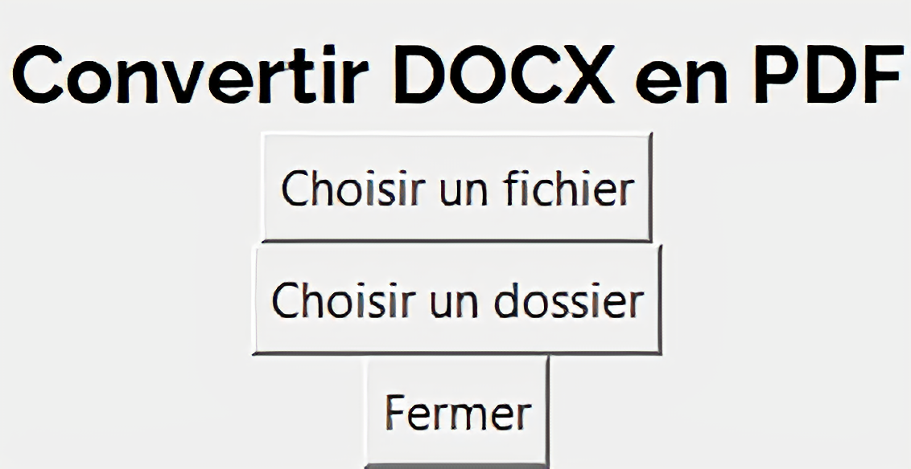
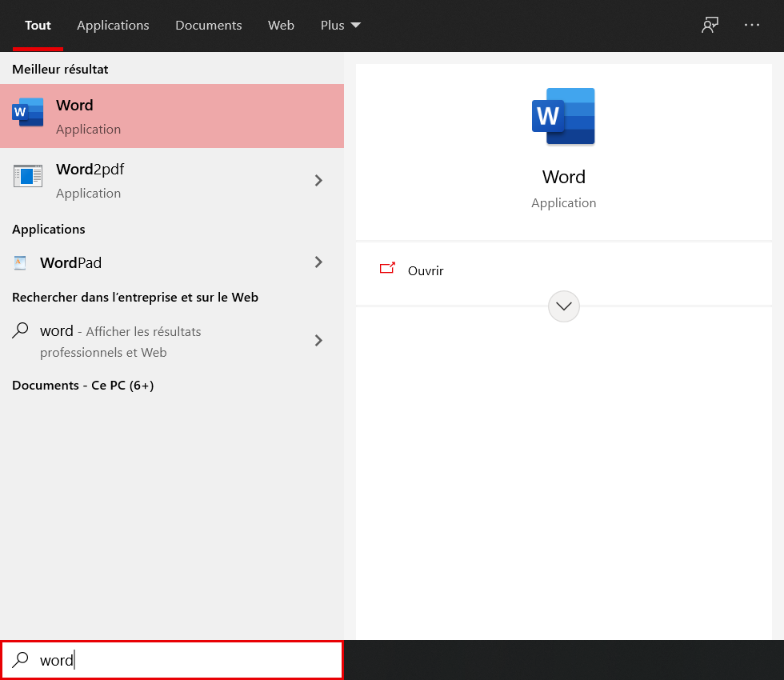

Détails
Word to Pdf
Word to Pdf (word vers pdf en français) est un programme qui consiste à convertir un ficher .docx en fichier .pdf
Description
Mon programme consiste en une petite interface graphique, qui propose :
- Soit de convertir un fichier
- Soit de convertir tous les fichiers d'un dossier
Ainsi, il propose en 2 clics une réelle facilité d'utilisation, que l'on recherche justement par le biais de ce type de programme.

L'interface graphique du programme
J'utilise Tkinter, qui me permet de gérer l'interface graphique du programme; mais aussi le module
docx2pdf de AlJohri
J'ai aussi pu le compiler en .exe, afin que le programme soit atteignable depuis la barre de recherche windows

Lorsqu'on cherche "word" on tombe sur mon programme
Informations
Statut : Terminé 
Language utilisé : Python